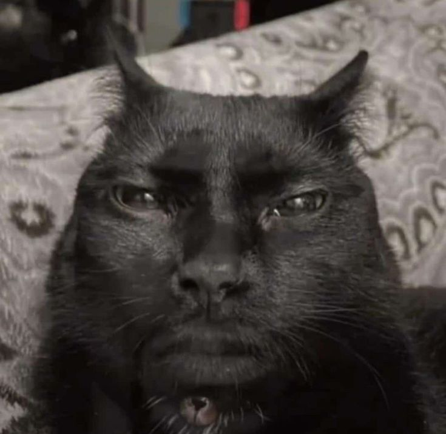

El gato cara de humano.
El terririfico gato cara de humano.

En internet se ha vueto viral el gato que empezó por videos en tiktok a ser un sticker de whatsapp...
Gato nigga
Hola criatura humanoide

1. Si este michi hablara, varios caerían.
2. Este gato no ladra… pero sí te deja en visto emocional.
3. Este gato no es oscuro… tú nomás estás quedando mal
AYUUUDAA!!!
KIAAAA
.jpg)
El diseño me consumio mi creatividad asi que no sé qué contenido agregar, pero al menos el diseño esta listo >:v
Spinning Cat “oiia oiia”: La historia del meme viral
Básicamente, si entras a TikTok o Instagram seguro te has topado con el famoso Spinning Cat, también llamado “gato oiia oiia”. Es ese michi que gira sin parar mientras canta algo que suena como “oiia oiia” y que ahora aparece haciendo covers de canciones famosas.
El meme nació de una foto de un gato rescatado llamado Ethel, publicada en 2019. Años después, en 2021, apareció el audio “oiia oiia”, creado por un tiktoker turco. En 2023, usuarios en China mezclaron la foto del gato con ese sonido y nació el famoso Spinning Cat. El primer video salió en la plataforma asiática Bilibili y luego llegó a YouTube. Desde entonces se volvió viral, y en 2024 revivió con fuerza gracias a los covers de canciones populares.
Entre giros, maullidos y memes, los gatos siempre encuentran una forma de mejorar el día.
Pues eso, tiene poco contenido, pero al menos funciona XD
También falta optimizar el reponsivo de todo los elementos, falta agregar JavacSript para que sea más interactiva la página.
Eso es todo chiao.